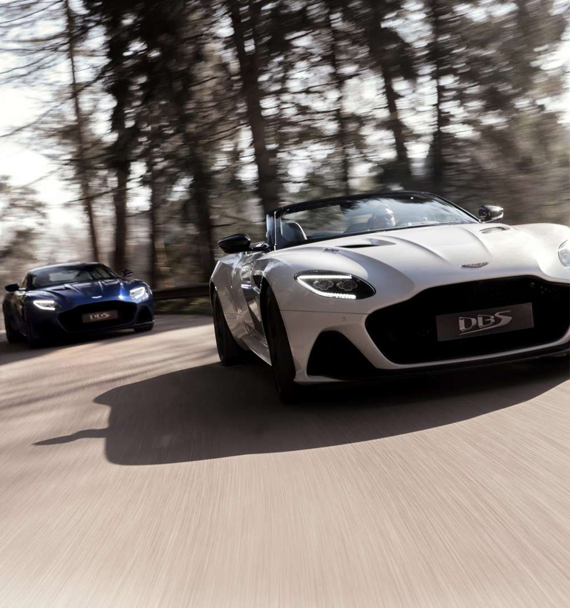

<!DOCTYPE html>
<html lang="en">
<head>
    <meta charset="UTF-8">
    <meta name="viewport" content="width=device-width, initial-scale=1.0">
    <meta http-equiv="X-UA-Compatible" content="ie=edge">
    <title>DBS SUPERLEGGERA</title>
    <link rel="stylesheet" href="css/import.css">
    <script src="https://ajax.googleapis.com/ajax/libs/jquery/1.12.4/jquery.min.js"></script>
    <script src="https://cdnjs.cloudflare.com/ajax/libs/waypoints/2.0.3/waypoints.min.js"></script>
    <script src="js/counterup.js"></script>
    <script src="https://kit.fontawesome.com/ca85dab293.js" crossorigin="anonymous"></script>
    <script>
        $(document).ready(function(){
            $('.counter').counterUp();
        });    
    </script>
</head>
<body>
    <div class="wrap sub sub4">
        <header>
            <h1>toplogo</h1>
            <nav>
              <label for="mnav" class="fas fa-bars mui fa-2x"></label>
              <input type="checkbox" id="mnav" class="mui">
              <ul>
                  <li><a href="index.html">HOME</a></li>
                  <li><a href="sub1.html">DBX</a></li>
                  <li><a href="sub2.html">VANTAGE</a></li>
                  <li><a href="sub3.html">DB11</a></li>
                  <li><a href="sub4.html" class="active">DBS SUPERLEGGERA</a></li>
                  <li><a href="sub5.html">RAPIDE AMR</a></li>
                  <li><a href="sub6.html">ASTON MARTIN VALKYRIE</a></li>
              </ul>
            </nav>
        </header>
        <section>
            <div class="spectArea">
                <h2></h2>
                <dl>
                    <dt><strong class="counter">211</strong> <small>MPH</small></dt>
                    <dd>TOP SPEED</dd>
                </dl>
                <dl>
                    <dt><strong class="counter">715</strong> <small>BPH</small></dt>
                    <dd>POWER</dd>
                </dl>
                <dl>
                    <dt><strong class="counter">3.4</strong> <small>S</small></dt>
                    <dd>0~62MPH</dd>
                </dl>
            </div>
            <div class="mainText">
                <h2><small>DISCOVER</small><br>THE ULTIMATE PRODUCTION ASTON MARTIN</h2>
                <p>For over half a century, the name DBS has meant just one thing: the ultimate production Aston Martin. A DBS is a distilledconcentrate of all that has made Aston Martin not just one of the most coveted brands in the automotive sphere, but in all fieldsof endeavour, right around the world.</p>
                <p>Now the new DBS Superleggera has arrived. Its beauty leaves no room for doubt. Its power cannot be reasoned with.</p>
                <p>Unquestionably, DBS Superleggera sits at the pinnacle of the Aston Martin production range. It is both a shining lightexpressing the most beautiful automotive art and, at the same time, a dark and menacing shadow of brutal, unequivocalstrength. It is this fine blend of seemingly opposing traits that makes the DBS Superleggera the absolute Aston Martin.</p>
            </div>
            <ul class="detailIMG">
                <li>
                    
                </li>
                <li>
                    
                </li>
                <li>
                    
                </li>
                <li>
                    
                </li>
                <li>
                    
                </li>
                <li>
                    
                </li>
            </ul>
            <div class="detailText">
                <dl>
                    <dt>MENACINGLY ATTRACTIVE</dt>
                    <dd>Convention says form and function are opposing interests. The DBS Superleggera proves otherwise.The shape is unmistakably Aston Martin, but stronger, broader and more muscular than ever, not at astylist’s whim but to cool and control the most powerful production Aston Martin ever.</dd>
                </dl>
                <dl>
                    <dt>TAKEN BY ITS BEAUTY</dt>
                    <dd>The DBS Superleggera is dominated by a breath-taking hexagonal grille, combining a sense of unboundedstrength with the most natural beauty. This sets the visual agenda for the entire car while simultaneouslyfeeding the insatiable appetite for oxygen of the mighty 715bhp engine.</dd>
                </dl>
                <dl>
                    <dt>A WHOLE NEW REALM OF LUXURY</dt>
                    <dd>Where others stop, we start. Settle into the sumptuous, leather upholstered interior of the DBS Superleggeraand see how our high-performance seats support your body to perfection. In both the driver and passengerseat you are home before the journey has even commenced.</dd>
                </dl>
                <dl>
                    <dt>STRONGEST LIGHTWEIGHT MATERIALS</dt>
                    <dd>Typically, as a car gets faster, it requires more cooling, larger brakes and stronger suspension, which inevitablyresults in increased weight. The DBS Superleggera begs to differ. Naturally it has been upgraded in all areasrequired to handle its phenomenal performance, but not by merely adding more of the same, instead using thefinest, strongest lightweight materials.The DBS Superleggera includes Carbon Ceramic Brakes as standard,this braking system in conjunction with the new 21" forged wheels, further enhances the superlight nature of the car. All features in combination result in a 70kg weight saving over the DB11.</dd>
                </dl>
                <dl>
                    <dt>THE ARCHITECTURE OF BEAUTIFUL</dt>
                    <dd>Power without control is power that is squandered, which is why the DBS Superleggera is a master at makingthe most of the vast resources the V12 places at its disposal.It starts with a chassis of enormous rigidity andcontinues with a classic double wishbone front suspension, a geometrically optimal multilink rear axle and aneven more stable stance thanks to a track that is 10mm wider than the DB11 at the front and 20mm wider at therear.Of course, the massive Pirelli P Zero tyres are bespoke for the DBS Superleggera.</dd>
                </dl>
            </div>
            <ul>
                <li>
                    
                </li>
                <li>
                    
                </li>
                <li>
                    
                </li>
            </ul>
        </section>
        <footer>
            <h2>footer logo</h2>
            <ul>
                <li><a href="sub1.html">DBX</a></li>
                <li><a href="sub2.html">VANTAGE</a></li>
                <li><a href="sub3.html">DB11</a></li>
                <li><a href="sub4.html">DBS SUPERLEGGERA</a></li>
                <li><a href="sub5.html">RAPIDE AMR</a></li>
                <li><a href="sub6.html">ASTON MARTIN VALKYRIE</a></li>
            </ul>
        </footer>
    </div>
</body>
</html>